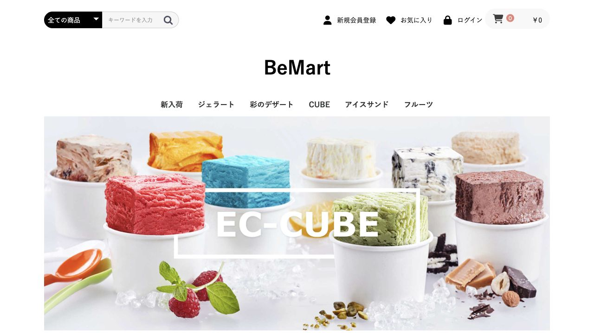
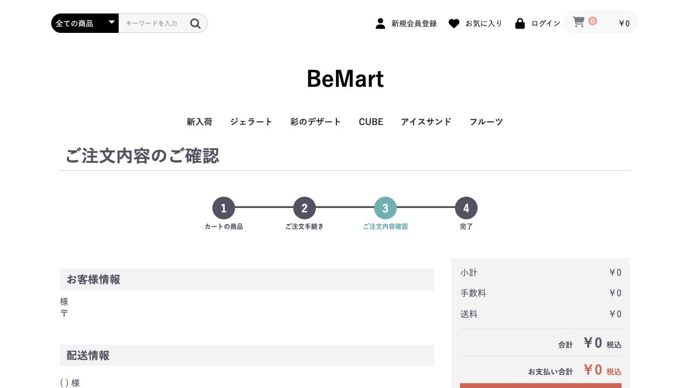
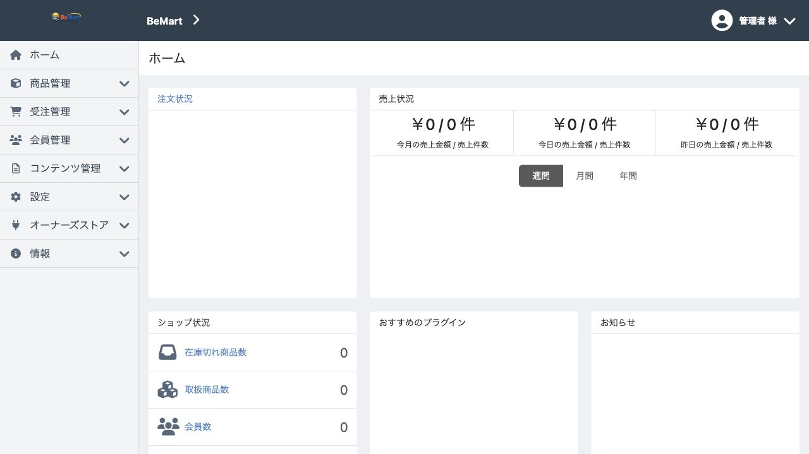
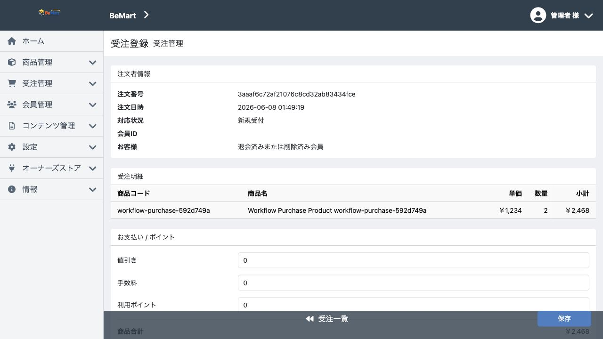

BeMart Documentation
BeMart は、EC-CUBE 4.3 の業務意味、状態遷移、入力制約、SQL、HTML affordance を 分解し、ALPS / Be Framework / BEAR.Sunday / Ray.MediaQuery / Twig HTML / workflow evidence へ再配置したアプリケーション・オーバーホールの実証です。
これは controller rewrite ではありません。巨大な既存アプリケーションを、 読める意味、明示された境界、検証可能な契約へ変換できるかを、実装と証拠で示すプロジェクトです。
534ALPS descriptors
207ALPS transitions
146Page resources
150SQL files / DbQuery methods
236OpenAPI operations
140Web E2E screenshots
Single Source of Truth
ALPS docs アプリケーション意味論・状態・遷移の生成ドキュメント。
まず読む順
- 証拠の全体像 ALPS、Resource、SQL、API、HTML、Web E2E screenshot を一箇所で見る。
- プロジェクトのゴール semantic overhaul としてのゴール、成果、残差、次フェーズ。
- 実証として何を示せたか BeMart が semantic migration の実証として到達した結果。
- 現在の到達点 ALPS / Be / Resource / SQL / HTML / test の到達点。
- 完全代替への残差 完全代替に必要な互換 fidelity と production verification。
- flow / workflow の考え方 自然言語シナリオ、flow tag、workflow test の関係。
- ドキュメント全体の索引 docs 配下の正典文書、生成物、補助資料の索引。
画面証跡
最新の全件 Web E2E run は、実DB/prod context で 186 機能を検証し、 140 枚のスクリーンショットを保持しています。
{kind=link}

Storefront top{kind=link}

Checkout confirm{kind=link}

Admin dashboard{kind=link}

Order detail全機能表は Web機能 実装状態一覧表、 run summary は Web E2E結果。
生成ドキュメント
- BEAR.ApiDoc PHP Resource の `on*` method から生成される Page Resource API ドキュメント。
- OpenAPI JSON BEAR.ApiDoc から生成される OpenAPI 3.1 契約。
- API terms Resource / Input / representation に現れる語彙の利用索引。
- API llms.txt LLM が API surface を読むための要約。
補助資料
- Feature matrix EC-CUBE route/function と ALPS ID、実装状態、難易度の対応表。
- Workflow evidence principle 状態遷移契約を PHP Resource / HTTP / HTML affordance へ投影する考え方。
- Initial ALPS article EC-CUBE ソースコードから ALPS を逆算した初期記録。
- GitHub repository ソース、生成物、移植ログを含む BeMart repository。